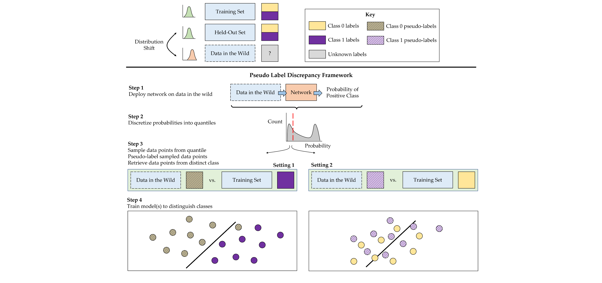
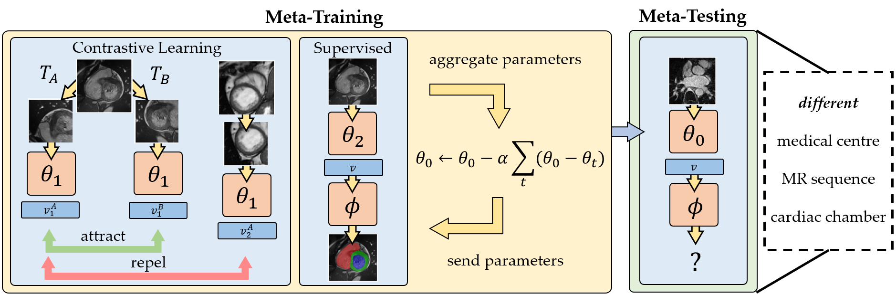
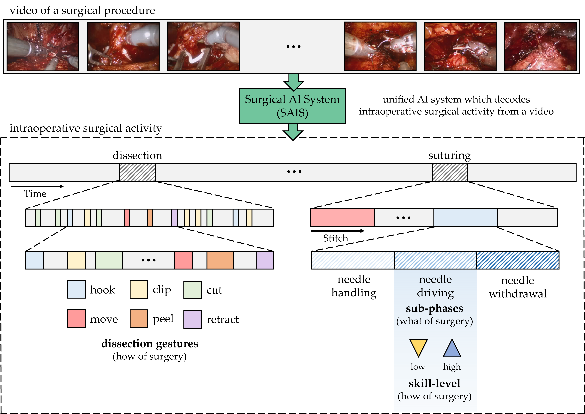
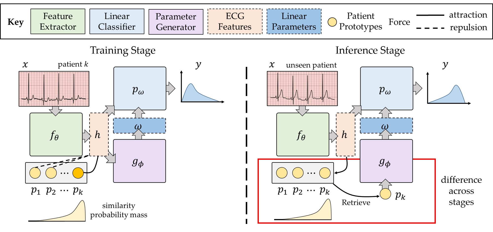

Techniques for evaluating artificial intelligence systems without ground-truth annotations
EP 4538932 A1 · Published 2025 · Flatiron Health
Inventor on patents spanning surgical vision, cardiac imaging, and clinical machine learning. Granted and pending filings.

EP 4538932 A1 · Published 2025 · Flatiron Health

US 12,002,202 B2 · Granted 2024 · Merck Sharp & Dohme

WO 2024/123888 A1 · Published 2024 · Vicarious Surgical
